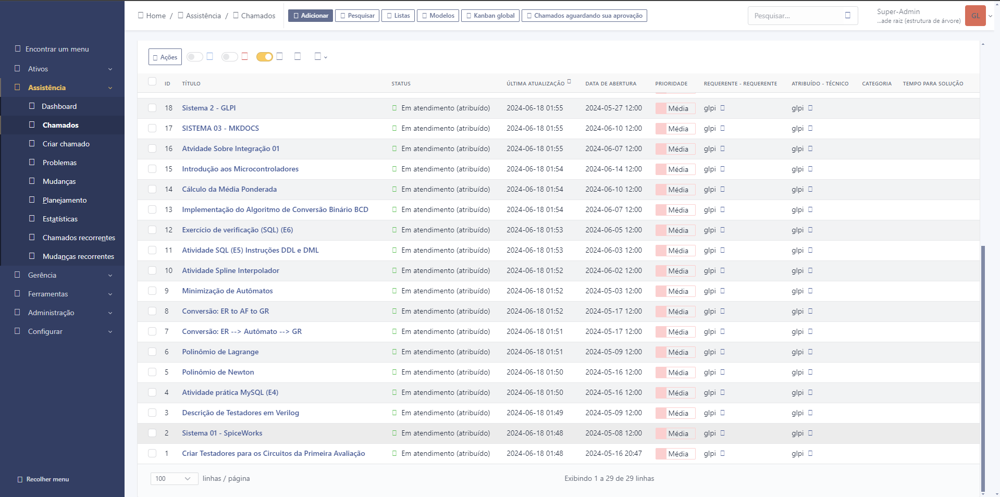

Introdução ao GLPI
Instalação do GLPI
Como já vimos, o GLPI é um sistema de gerenciamento de TI. Nele você pode adicionar ativos, chamados, criação de usuários, etc. Há mais funcionalidades nele porém vamos para o processo de como podemos instalar o GLPI. Diante mão já venho dizer que há três maneiras básicas de instalar o GLPI, são elas:
Algumas formas de instalar
- XAMPP: O XAMPP é uma distribuição do Apache fácil de instalar contendo PHP, MySQL e Perl.
- WSL: Subsistema Windows para Linux.
- VitualBox: Uma VM é uma representação virtual de um computador físico.
Processo de instalação e configuração
Primeiro Passo
Eu utilizei o XAMPP para usar o GLPI, pois eu queria ver como ele iria conseguir executar o GLPI. Primeiro passo é instalar o XAMPP. Quando você entrar no site haverá três opções, no meu caso eu usei a versão do windows:
| Versão | Soma de verificação | tamanho |
|---|---|---|
| 8.0.30 / PHP 8.0.30 | md5 sha1 | 144mb |
Como o XAMPP instalado agora você tem que baixar uma pasta do GLPI A versão mais recente estável, que é a GLPI 10.0.15. Agora temos tudo que precisamos para utilizar o GLPI.
Segundo Passo
Na segunda parte agora você vai ter que pegar a pasta GLPI que você baixou e extrair ela. Após extrair a pasta, você vai recotar ela e ir para a pasta do XAMPP.
Localize a pasta htdocs, bote a pasta que você recortou dentro dela, e agora o XAMPP vai conseguir usar as funcionalidades do GLPI.
Terceiro Passo
Agora temos tudo que precisamos para utilizar o GLPI. Primeiro clique em start tanto no Apache como no mySQL, após isso você pode ir no seu navegador principal e bote a URL: http://localhost/glpi, quando você botar isso você será direcionando para a aba principal do GLPI.
Primeiro Passo GLPI
No Primeiro passo ele vai pedir que tipo de linguagem você quer definir como padrão para o seu sistema. No meu caso eu utlizei a linguagem portuguesa mesmo.
Segundo Passo GLPI
No Segundo passo haverá um nota de licença do GLPI, só aperte o botão Continuar e você irá para o terceiro passo.
Terceiro Passo GLPI
No Terceiro passo você terá duas opções Instalar e Atualizar, se você fez tudo que eu lhe falei até o momento, aperte no botão de instalar.
Quarto Passo GLPI
Após isso você perceberá que vai haver várias coisas faltando no seu setup, porém você só precisará alterar duas para que o seu sistema esteja pronto. Veja abaixo :arrow_down:

Veja que o gd e o intl não estão no seu sistema. Neste caso você terá que adicionar eles. Vá no Module Apache, como fizemos na outra vez e de novo entre no config do php.ini. Localize o gd e o intl dentro do arquivo, pois possivelmente eles estarão comentado. Descomente eles e salva o arquivo no bloco de notas. Atualize o navegador e agora você pode ir para a próxima etapa, somente clicando em Continuar.
Quinto Passo GLPI
Agora você irar criar uma conexão com o banco de dados para armazenar seus arquivos.
| Enderço do servidor | Usuário SQL | Senha |
|---|---|---|
| localhost | root | não precisa |
Feito isto, clique em Continuar
Sexto Passo GLPI
Agora ele vai pedir para você criar um banco de dados. Você pode botar qualquer nome para o seu banco, no meu caso eu botei glpi, após isso, aperte em Continuar.
Sétimo Passo GLPI
Ele vai perguntar se pode fazer agora a criação do banco de dados, aperte em Continuar.
Oitavo Passo GLPI
Ele vai pedir a coleta de dados, aperte em Continuar.
Nono Passo GLPI
Finalmente ele vai perguntar se você deseja utilizar o GLPI :relieved:. Aperte em Usar o GLPI.
Décimo Passo GLPI
Agora é só entrar no sistema e configurar de acordo com o que você deseja.
| Nome do utilizador | Palavra passe |
|---|---|
| glpi | glpi |
Utilize o que está acima para entrar como administrador no seu sistema GLPI.
Quarto Passo
Se você chegou até aqui, você finalmente vai pode utilizar o seu sistema glpi e fazer chamados, veja como ficou o meu abaixo:

Caso você ainda tenha problemas, CLIQUE AQUI para mais informações sobre esse mesmo processo